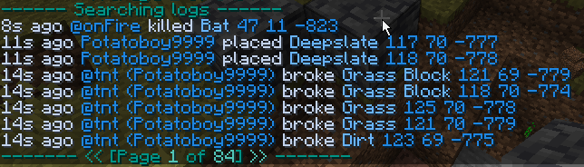
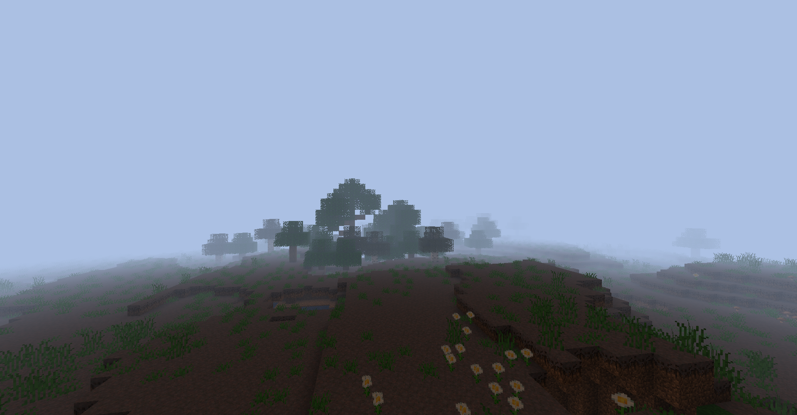
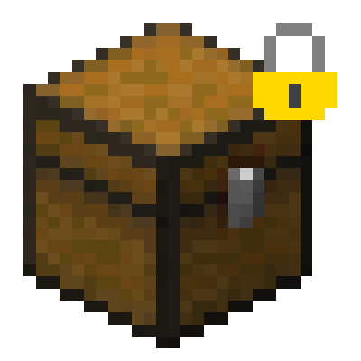
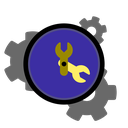

About us
We aim to create high-quality Minecraft mods for Fabric (and in the future Quilt) servers, making them a viable alternative to bukkit based servers
Discuss
Discussion takes place on our Discord server
All our code is licensed under a permissive, copyleft license, providing a nice change of pace for many developers
Ledger
Ledger is a server-side mod for 1.17 and later, which logs interactions with the world and allows for lookup and rollback. Ledger also has support for Watson, which allows for client-side graphical lookup of the logs

Interdimensional
Interdimensional is a server-side mod for 1.17 and later, which allows for the creation and management of custom dimensions
Hey That's Mine
Hey That's Mine is a server-side mod for 1.16 and later, providing container locking and trusting functionality
BlockBot
Blockbot is a server-side mod for 1.16 and later which allows you to link your server chat with a discord channel. BlockBot also has an API which could allow BlockBot functionality for platforms other than discord
TickTools
TickTools is a server-side mod for 1.17 and later which adds performance options like no-tick view distance and dynamic tick distances